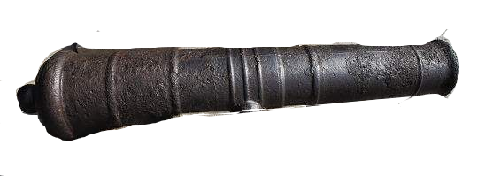

<!DOCTYPE html>
<html>
	<head>
		<meta charset="utf-8">
		<title>dom-3</title>
		<style type="text/css">
			.body {
				width: 100%;
				height: 100%;
				/* position: relative; */
			}

			.longStick {
				width: 400px;
				height: 100px;
				background: url("200.png") right no-repeat;
				background-size: 74%;				
				position: absolute;
				left: 50%;
				margin-left: -300px;
				top: 20%;
			}
/* 
			.longStick img {
				width: 80%;
				margin-left: 20%;
				/* 禁止选择 */
				-moz-user-select: none;
				/*火狐*/
				-webkit-user-select: none;
				/*webkit浏览器*/
				-ms-user-select: none;
				/*IE10*/
				-khtml-user-select: none;
				/*早期浏览器*/
				user-select: none;
			} */
		</style>
	</head>
	<body>
		<div class="longStick" id="stick1">
			<!--  -->
		</div>

	</body>
</html>
<script>
	//1.1 鼠标事件
	// document.body.onmousedown = function(e){
	// 	console.info(1);
	// }
	// document.body.onclick = function(){
	// 	console.info(2);
	// }

	document.getElementById("stick1").onmousedown = function(e) {
		// onmousemove 事件驻车
		e.target.onmousemove = function(ev) {
			setBomAngle(ev);
		}
	}
	document.getElementById("stick1").onmouseup = function(e) {
		console.info("停止监听");
		e.target.onmousemove = null; // 事件解绑
	}
	// 容错 onmouseout 
	document.getElementById("stick1").onmouseout = function(e) {
		console.info("停止监听");
		e.target.onmousemove = null;
	}

	// 监听键盘
	// 在这里补充些按键类型和shift 组合按键, 
	// 参考 http://www.w3school.com.cn/example/hdom_examples.asp
	window.onkeypress = function(e) {
		//var e = event || window.event || arguments.callee.caller.arguments[0];
		console.info(e.key);
	}


	// 设定炮口的角度(响应鼠标move事件)
	function setBomAngle(e) {
		// 取出当前角度, 排除掉字符串取角度数字 "rotate(-25deg)" => -25
		var currAngle = document.getElementById("stick1").style.transform;
		if (!currAngle) {
			currAngle = 0;
		} else {
			currAngle = currAngle.replace("rotate(", "");
			currAngle = currAngle.replace("deg)", "");
			currAngle = parseInt(currAngle);
		}
		// 鼠标y方向的变化, 小于0代表向上, 反之亦然
		if (e.movementY < 0) {
			currAngle -= 1;
		} else {
			currAngle += 1;
		}
		//限制角度,超过角度不操作
		if(  currAngle > -30 &&  currAngle < 0 ){
			document.getElementById("stick1").style.transform = "rotate(" + currAngle + "deg)";
		}
		
		
	}

	// var counter1 = 0;
	// var angleFlag = false; // 升降标志位
	// setInterval(function(){
	// 	if( counter1 > 0 ){
	// 		angleFlag = true;
	// 	}
	// 	if( counter1 < -25 ){
	// 		angleFlag = false;
	// 	}
	// 	if( angleFlag){
	// 		counter1 -= 1;
	// 	}else{
	// 		counter1 += 1;
	// 	}
	// 	//console.info( counter1 );
	// 	//
	// 	document.getElementById("stick1").style.transform = 'rotate('+ counter1 +'deg)';
	// }, 40);
</script>
